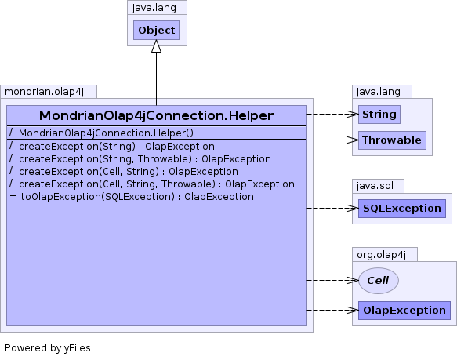

static class MondrianOlap4jConnection.Helper extends Object

| Constructor and Description |
|---|
MondrianOlap4jConnection.Helper() |
| Modifier and Type | Method and Description |
|---|---|
(package private) OlapException |
createException(Cell context,
String msg)
Creates an exception in the context of a particular Cell.
|
(package private) OlapException |
createException(Cell context,
String msg,
Throwable cause)
Creates an exception in the context of a particular Cell and with
a given cause.
|
(package private) OlapException |
createException(String msg) |
(package private) OlapException |
createException(String msg,
Throwable cause)
Creates an exception with a given cause.
|
OlapException |
toOlapException(SQLException e)
Converts a SQLException to an OlapException.
|
MondrianOlap4jConnection.Helper()
OlapException createException(String msg)
OlapException createException(Cell context, String msg)
context - Cell context for exceptionmsg - MessageOlapException createException(Cell context, String msg, Throwable cause)
context - Cell context for exceptionmsg - Messagecause - Causing exceptionOlapException createException(String msg, Throwable cause)
msg - Messagecause - Causing exceptionpublic OlapException toOlapException(SQLException e)
This method is typically used as an adapter for SQLException instances coming from a base class, where derived interface declares that it throws the more specific OlapException.
e - Exception